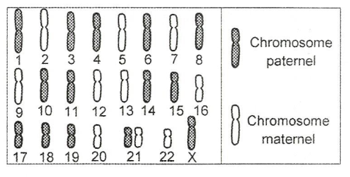
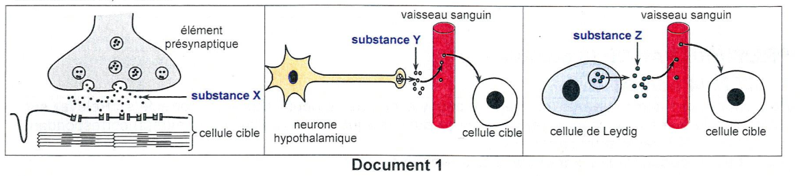
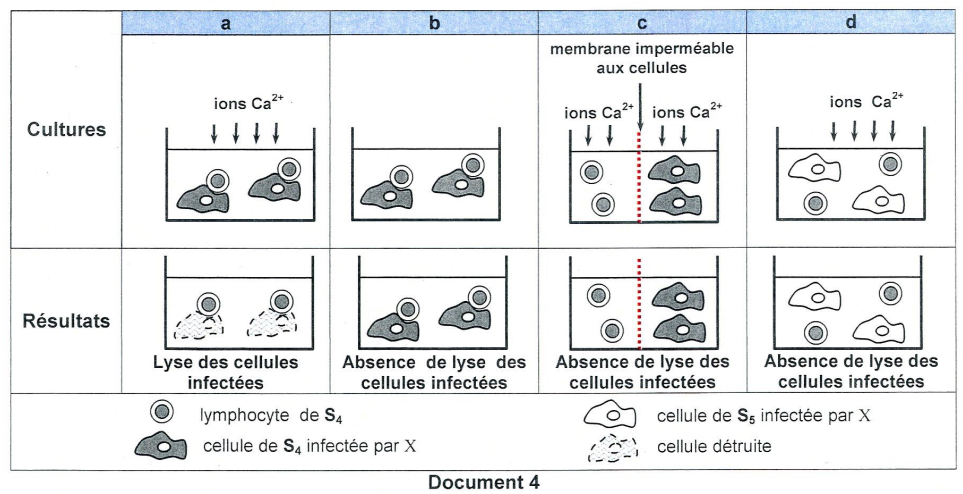

Sciences de la Vie
et de la Terre
Session Principale 2024 — Épreuve officielle simulée
Clique sur chaque verbe pour comprendre ce qu'attend le correcteur.
⚠️ Décrire sans interpréter = 0 pt.
⚠️ Nommer sans expliquer = incomplet.
⚠️ Affirmer sans justifier = non recevable.
⚠️ Rédiger un paragraphe entier = perte de temps.
⚠️ Ignorer les documents = hors sujet.
⚠️ Pas de légende = 0 pt.
Ce que tu dois savoir
Notions ciblées pour cette épreuve uniquement
Substance X – Acétylcholine : Neurotransmetteur libéré au niveau de la plaque motrice. Il provoque la dépolarisation du sarcolemme (PPM puis PAM).
Substance Y – GnRH : Hormone hypothalamique qui stimule la sécrétion de LH et FSH par l'hypophyse.
Substance Z – Testostérone : Hormone stéroïde sécrétée par les cellules de Leydig. Elle agit sur les cellules responsables des caractères sexuels, les cellules germinales (spermatogenèse) et exerce un rétrocontrôle négatif sur l'hypothalamus et l'hypophyse.
المادة X (الأستيل كولين) تعمل على إزالة استقطاب الغشاء العضلي. المادة Y (GnRH) تحفز إفراز LH و FSH. المادة Z (التستوستيرون) تؤثر على الخلايا الجنسية وتغذية راجعة سلبية.
RIMC (Réponse à médiation cellulaire) : Réponse immunitaire faisant intervenir les LTc (cytotoxiques) qui tuent les cellules infectées.
Coopération cellulaire : Les macrophages présentent l'antigène aux LT4 via le CMH II. Les LT4 activés sécrètent l'IL2 qui active les LT8 (futurs LTc).
Mécanisme de la lyse : Les LTc reconnaissent la cellule infectée via le TCR et le CMH I. Ils libèrent des perforines qui, en présence d'ions Ca²⁺, créent des canaux dans la membrane de la cellule cible → entrée d'eau et d'enzymes → cytolyse.
الخلايا الليمفاوية T4 (LT4) تنشط الخلايا الليمفاوية T8 (LT8) عبر IL2، والتي تتمايز إلى خلايا T سامة (LTc) تقتل الخلايا المصابة عن طريق البيرفورين.
Gènes liés : Deux gènes situés sur le même chromosome sont dits liés. Leur transmission n'est pas indépendante.
Crossing-over : Échange de segments entre chromatides non-sœurs au cours de la prophase I de méiose. Il permet le brassage intrachromosomique.
Recombinaison : Le crossing-over produit des gamètes recombinés dont la fréquence permet de calculer la distance génétique entre les gènes.
Important : Chez le mâle de la drosophile, le crossing-over ne se produit pas.
الجينات المرتبطة تكون على نفس الكروموسوم. العبور (crossing-over) يحدث خلال الطور التمهيدي الأول للانقسام الاختزالي ويؤدي إلى إعادة التركيب الجيني.
Ministère de l'Éducation
EXAMEN DU BACCALAURÉAT
Pour chacun des items suivants (de 1 à 8), il peut y avoir une (ou deux) réponse(s) correcte(s). Reportez sur votre copie le numéro de chaque item et indiquez dans chaque cas la (ou les deux) lettre(s) correspondant à la (ou aux deux) réponse(s) correcte(s).
NB : toute réponse fausse annule la note attribuée à l'item.

caryotype-anormal.png

doc1-communication.png
| Substance chimique | Nom | Cellule(s) cible(s) | Effets physiologiques |
|---|---|---|---|
| X | |||
| Y | |||
| Z |

doc2-immunite.png

doc3-cultures.png
a- d'identifier les cellules sécrétrices d'IL2.
b- d'illustrer, par un schéma fonctionnel, les interactions entre les cellules immunitaires dans la culture C₁.

doc4-lyse.png
a- de dégager trois conditions nécessaires à la lyse des cellules infectées.
b- d'identifier la catégorie de lymphocytes isolés de S₄.
c- d'expliquer le mécanisme de la lyse des cellules infectées par X dans la culture a.
a- préciser la relation de dominance entre les allèles de chaque couple.
b- déterminer la localisation chromosomique des deux couples d'allèles (a, a) et (b, b).
a- le génotype du mâle D₃.
b- les effectifs des différents phénotypes sur 1000 drosophiles issues du deuxième croisement.
Pour chacun des items suivants (de 1 à 8), il peut y avoir une (ou deux) réponse(s) correcte(s). Reportez sur votre copie le numéro de chaque item et indiquez dans chaque cas la (ou les deux) lettre(s) correspondant à la (ou aux deux) réponse(s) correcte(s).
NB : toute réponse fausse annule la note attribuée à l'item.
caryotype-anormal.png